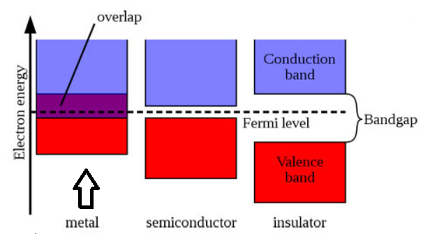

도체와 부도체, 반도체의 차이
원자의 세계
세상의 모든 물질을 구성하고 있는 원자 각각에는 고유한 전자 에너지 준위가 존재합니다. 원자는 양전하를 띠는 원자핵과, 음전하를 띠는 전자로 이루어져 있습니다. 둘은 서로 다른 전하를 띠므로 원자핵과 전자 사이에는 인력이 발생합니다. 원자의 중심에 위치한 원자핵은 전자에 비해 상대적으로 매우 무거운 질량을 가지고 있기에 전자가 원자로부터 벗어나지 않도록 합니다. 중력의 영향을 받는 지구상의 물체는 지구에서 멀어질수록 더 큰 힘을 필요로 합니다. 그래서 지표면으로부터 더 높이 떠있을수록 포텐셜 에너지가 높다고들 하죠. 마찬가지로, 원자핵의 인력 영향을 받는 전자도 원자핵으로부터 멀어질수록 더 큰 힘을 필요로 하기에, 그만큼 포텐셜 에너지 준위가 더 높다고 할 수 있습니다.원자가띠(Valence Band)와 전도띠(Conduction Band), 그리고 밴드갭(Band Gap)
위에서 말씀드렸듯이, 각 원자에서 원자핵 주위를 도는 전자는 그 거리가 멀수록 더 높은 에너지 준위를 가지고 있다고 할 수 있습니다. 그런데, 전자는 태양 주위를 도는 지구와 같이 원자핵 주위에서 끊임없이 운동하고 있습니다. 전자가 원자핵으로부터 멀어지며 전자 자체의 운동량이 원자핵의 인력보다 커지게 되면, 마침내 전자는 원자핵으로부터 벗어나 운동할 수 있게 됩니다. 이렇게 원자핵이 전자를 가둘 수 있는 최대의 에너지 준위를 원자가띠(Valence Band), 전자가 벗어날 수 있는 최소의 에너지 준위를 전도띠(Conduction Band)라 하며, 원자가띠와 전도띠의 에너지 준위는 연속적이지 않고 마치 디지털 신호처럼 일정 전위차를 가진 채 분리되어 있습니다. 이렇게 원자가띠와 전도띠 사이의 에너지 준위차를 밴드갭(Band Gap)이라 합니다. 전도띠로 이동한 전자는 외부의 전기적 흐름에 따라 이동하며 전류를 만들어낼 수 있습니다. 구리 전선에 전압을 인가하면 전류가 흐르는 것도 같은 원리라 할 수 있죠.밴드갭과 전도성
수소, 헬륨, 실리콘, 니켈 등 세상의 물질을 구성하는 원자(원소)들은 각각의 고유한 에너지 준위를 가지고 있습니다. 이전에, 전자가 원자핵으로부터 벗어날 수 있는 경계점을 기준으로 원자가띠와 전도띠로 나눌 수 있다 하였는데요, 서로 다른 원자들이 고유한 에너지 준위를 갖기에 그 원자들이 가지는 밴드갭 역시 상이합니다. 이는 원자가 모여 만들어지는 분자의 경우도 마찬가지입니다. 원자든 분자든 고유한 밴드갭을 갖고 있기에 서로 다른 전기적 특성을 갖고 있습니다. 전자는 원자핵으로부터 멀어질수록 더 높은 에너지 준위를 갖고 있습니다. 달리 말해, 전자가 에너지를 빼앗기면 원자핵에 가까워지게 되고 반대로 에너지를 얻을 경우 원자핵으로부터 멀어지게 됩니다. 전도띠로 이동한 전자는 전기적 흐름을 만들어낼 수 있다고 하였는데요, 물질의 고유 밴드갭보다 더 큰 에너지를 받게 되면 비로소 전자는 원자가띠에서 벗어나 전도띠로 이동하여 전기적 흐름을 만들어낼 수 있게 됩니다. 그런데 어떤 물질은 밴드갭이 너무 크고, 어떤 물질은 밴드갭이 너무 작아 겹쳐져 있기도 합니다. 이렇게 물질의 밴드갭에 따라 에너지를 받았을 때 전도성을 가질 수도 있고, 없을 수도 있습니다. 이러한 성질이 각 물질이 도체인지, 부도체인지, 또는 반도체인지를 결정한다고 할 수 있습니다.도체와 부도체, 그리고 반도체
위는 서로 다른 물질이 가지는 밴드갭 특성을 표현한 그림입니다. 가장 왼쪽과 같이 밴드갭이 너무 작아 전도띠와 원자가띠의 일부가 서로 겹쳐져 있는 경우, 우리는 이를 도체(금속체)라 부릅니다. 이러한 도체는 전자가 별도의 에너지를 외부로부터 받지 않더라도 자유롭게 전도띠를 드나들 수 있기에 언제든 전도성을 가지고 있습니다. 가장 오른쪽과 같이 원자가띠와 전도띠 사이의 밴드갭이 너무 큰 경우, 부도체라고 칭합니다. 부도체는 웬만한 큰 에너지를 받아도 밴드갭이 너무 커서 대부분의 경우 전자가 전도띠로 이동하지 못합니다. 따라서 전압을 가해도 전류가 흐르지 않죠. 중간과 같이 전도띠와 원자가띠의 겹쳐진 부분이 없고 그 밴드갭이 적당한 경우, 이를 반도체라 합니다. 말그대로 반도체는 도체의 성질을 반만 가졌다고 할 수 있죠. 항상 전기가 흐를 수 있는 도체나 항상 전기가 흐르지 못하는 부도체와 달리, 외부에서 가하는 에너지를 제어하면 반도체 물질의 전도성 여부를 결정할 수 있습니다. 전기기기나 전자제품을 사용하다 보면 상황에 따라 전류가 흘러야 할 때가 있고, 아닐 때가 있습니다. 반도체는 이러한 전기적 특성을 조절할 수 있기에 전자제품의 회로를 구성함에 있어 매우 유용하다고 할 수 있습니다. 반도체의 대표적 물질로 SiO2가 있습니다. 순수 실리콘(Si)의 경우 부도체에 가까운 성질을 가지고 있지만, 산소가 붙어 산화된 SiO2는 반도체의 성질을 띠게 됩니다.